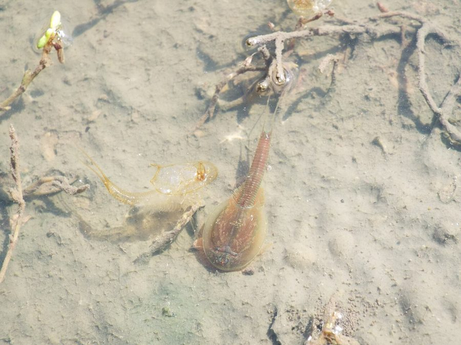

टैडपोल श्रिम्पTadpole Shrimp
Triops granarius · Triopsidae · CRU-0008

- Scientific name वैज्ञानिक नाम
- Triops granarius (Lucas, 1864)
- Family कुल
- Triopsidae
- Hindi हिंदी
- टैडपोल श्रिम्प
- Local names स्थानीय नाम
- tadpole shrimp, triops, tadpol shrimp
- Status here यहाँ की स्थिति
- native
- Movement आवागमन
- Resident, here all year
- IUCN IUCN
- not evaluated
- Review समीक्षा
- audited and independently read
When to look कब देखें
Expected mainly in July, August, September, October, November, December. मुख्यतः जुलाई, अगस्त, सितंबर, अक्टूबर, नवंबर, दिसंबर में अपेक्षित।
टैडपोल श्रिम्प / Tadpole Shrimp
Triops granarius (Lucas, 1864) — Triopsidae
टैडपोल श्रिम्प — बरसात के पानी में एक अद्भुत, जीवन्त जीव दिखता है जो बिल्कुल छोटे टैडपोल (मेंढक का बच्चा) जैसा दिखता है — यही टैडपोल श्रिम्प है। इसकी लंबाई 2–3 सेंटीमीटर तक होती है। इसके शरीर के ऊपर एक बड़ी-बड़ी ढाल जैसी कवच होती है, और पूँछ में दो तार होते हैं। इसके पास तीन आँखें होती हैं — दो पिछली ओर और एक बीच में। यह तालाब की तली में रेंगता है, कीचड़ खाता है, और छोटी-छोटी चीजें भी शिकार करता है। बहुत पुराना जीव है — डायनोसॉर के ज़माने से यही जैसा ही दिखता है।
Quick Identification त्वरित पहचान
| Feature | Description |
|---|---|
| Size | 1.5–3 cm (occasionally larger); robust body |
| Shape | Oval, tadpole-like body; broad carapace covering most of the body |
| Carapace | Translucent to brownish, smooth, shield-like; covers head and anterior trunk |
| Eyes | Three: two compound eyes at rear and one median ocellus centrally located (characteristic of Notostraca) |
| Legs | Numerous (approx. 40–70 pairs) along the body, fringe-like, for benthic crawling |
| Tail (furca) | Two long setae extending from the rear; resembles tadpole tail |
| Antennae | Short, not prominent; not used for swimming |
| Movement | Crawls along the bottom; slow, steady motion |
Field tip: In temporary pools after monsoon, look for tadpole-shaped creatures crawling slowly along the bottom mud. The large shield-like carapace, the three eyes, and the two tail setae are distinctive. Unlike fairy shrimp, which swim on their backs, tadpole shrimp crawl along the bottom.
हिंदी — कैसे पहचानें: मेंढक के बच्चे जैसा छोटा। पीठ पर बड़ी ढाल। तीन आँखें — दो पीछे, एक बीच में। पूँछ में दो तार। तल में रेंगता है, तैरता नहीं।
Morphology आकारिकी
Biometrics (specimens from tropical temporary waters):
| Measurement | Range |
|---|---|
| Body length | 15–30 mm |
| Carapace length | 10–20 mm |
| Carapace width | 8–15 mm |
| Number of leg pairs | 40–70 |
| Setae length | 3–8 mm |
Carapace (dorsal shield): The carapace is a single, unsegmented plate covering the head, all thoracic segments, and part of the abdomen. It is translucent to brownish, smooth or faintly pitted. The carapace is hinged posteriorly, allowing flexion during movement and reproduction.
Eyes: Three eyes are diagnostic of order Notostraca: two lateral compound eyes positioned at the posterior edge of the carapace, and one median eye (ocellus) located centrally. The median eye is larger than the lateral eyes and is directed upward.
Legs: Numerous pairs (40–70, depending on size) of short, flattened phyllopodia (leaf-like limbs) line the ventral surface of the trunk. These limbs are fringed with setae and are used for benthic locomotion, not swimming.
Furca (tail): Two long setae extending from the posterior abdomen; used for sensing the environment.
Sexual dimorphism: Males and females are similar in overall morphology; sexual organs are internal.
हिंदी: पीठ की ढाल बिना खंडों के, चिकनी, पारदर्शी-भूरी। तीन आँखें अलग-अलग जगह। सैकड़ों पतली टाँगें पेट पर। पूँछ में दो तार संवेदना के लिए।
Behaviour & Ecology व्यवहार और पारिस्थितिकता
Benthic omnivore and scavenger. Triops granarius lives on the bottom of temporary ponds, feeding on decaying organic matter, algae, and organic sediment. It crawls slowly along the bottom, churning the sediment with its numerous legs, ingesting particles of detritus. This feeding behaviour disturbs the sediment and may have significant impacts on the pond ecosystem.
Opportunistic predator. In addition to detritivory, Triops is an opportunistic predator and cannibalist. It will capture and consume smaller crustaceans, including other Triops and fairy shrimp, as well as aquatic insect larvae. In crowded conditions or when food is scarce, cannibalism is common, with larger individuals eating smaller ones.
Rapid reproduction. Triops exhibits rapid, parthenogenetic reproduction (asexual; females produce offspring without males). Sexual reproduction also occurs, resulting in resting eggs. The population grows rapidly in the first few weeks of the pool's existence, taking advantage of the nutrient-rich environment created by decomposing vegetation.
Life history. After hatching from resting eggs, Triops grow rapidly and reach sexual maturity within 2–3 weeks. They begin reproducing while still growing. As the pool dries, the animals die, but the resting eggs enter dormancy in the sediment.
Environmental tolerance. Triops is hardy and tolerates extremes of pH, salinity, and temperature within the range found in temporary pools. The ability to tolerate acidic and alkaline water, saline pools, and both warm and cool conditions makes it a successful coloniser of diverse temporary habitats.
हिंदी: तली में रेंगता है, गाद खाता है। छोटे कीड़ों और श्रिम्प को भी खाता है। तेजी से बढ़ता है, प्रजनन करता है। अंडे सूख कर सो जाते हैं।
Life Cycle / Phenology जीवन चक्र
| Stage | Duration | Event |
|---|---|---|
| Resting egg (in soil) | 4–8 months | Dormancy through dry season |
| Egg hatching | Minutes to hours | Triggered by water immersion and temperature |
| Nauplius larva | 1–2 days | First free-swimming stage |
| Growth (juveniles) | 10–20 days | Rapid growth; moulting 10–12 times |
| Sexual maturity | 14–21 days | Begins reproduction |
| Adult reproduction | 3–8 weeks | Continuous egg laying; asexual and sexual eggs |
| Death | End of 6–12 weeks | As water dries; resting eggs in sediment |
Seasonal pattern in eastern UP:
- July–August: Monsoon rains fill ponds; eggs hatch
- August–October: Rapid growth, feeding, and reproduction
- October–December: Continued feeding and reproduction; pool drying begins
- January: Last animals die; resting eggs dormant in sediment
- February–June: Eggs dormant; resistant to desiccation and temperature extremes
हिंदी: अंडा सोता है, पानी भरे तो जागता है, तेजी से बढ़ता है, कुछ महीने में संतान पैदा करता है, फिर मर जाता है।
Host Plants or Prey आहार
Omnivorous diet:
- Algae and algal cells
- Plant detritus and decaying organic matter
- Organic sediment and mud
- Small crustaceans (fairy shrimp, other Triops)
- Aquatic insect larvae (small chironomid larvae, ostracods)
- Eggs of fish and other organisms
The species is a facultative predator; it feeds primarily on detritus but opportunistically consumes animal prey.
Predators / Natural Enemies शत्रु
- Fish: Small fish and killifish consume Triops; predation pressure increases as pools shrink
- Aquatic insects: Dragonfly nymphs and water beetle larvae prey on smaller Triops
- Amphibians: Tadpoles and adult frogs consume Triops
- Cannibalism: Larger individuals eat smaller Triops
Agricultural / Human Relevance कृषि प्रासंगिकता
Indicator organism. Triops presence in temporary ponds indicates a healthy, uncontaminated aquatic ecosystem. Their sensitivity to pollution and ability to rapidly respond to environmental changes make them useful bioindicators of water quality in temporary habitats.
Role in aquatic food webs. Triops are significant components of temporary pond food webs. They serve as prey for fish, aquatic insects, and amphibians, and their omnivorous feeding and benthic disturbance affects sediment cycling and nutrient availability to other organisms.
Pest potential in paddy fields. In some regions, Triops can become a pest in paddy fields, where the disturbance of sediment by their benthic activity may interfere with rice growth or compete for space and food with beneficial organisms. However, they are generally tolerated in tropical rice-fish systems.
Research significance. Triops species are used in laboratory research on diapause, dormancy, and aquatic ecology. The extreme longevity of resting eggs and the ability of the organism to survive harsh conditions make it a model for understanding environmental persistence and adaptation.
Harmlessness to humans. Triops have no direct medical or agricultural significance to humans in eastern UP; they are entirely free-living and harmless.
हिंदी: पानी की साफ़ाई का निशान। मछलियों का भोजन। खेतों में फायदा या नुकसान दोनों हो सकता है, पर ज़्यादा समस्या नहीं।
Expected Locally स्थानीय रूप से अपेक्षित
Not a field record. Written from published accounts for eastern Uttar Pradesh. No confirmed local sighting yet — if you have seen it, that is what the atlas needs.
अभी तक स्थानीय पुष्टि नहीं। यह विवरण प्रकाशित स्रोतों से है, किसी अवलोकन से नहीं।
Expected in temporary and seasonal ponds, floodplain pools, and paddy fields during the monsoon season (July–December) across Basti district. Triops appears in water within days of heavy rainfall and persists until the water dries. A confirmed local record would be a specimen collected from a temporary pond in the district during monsoon, preserved in 70% ethanol.
Distribution वितरण
Global range: Found in temporary waters on all continents except Antarctica; worldwide in tropical and temperate regions.
In India: Present in temporary water bodies across the subcontinent, particularly in monsoon-dependent regions.
In Uttar Pradesh: Expected in temporary ponds and paddy fields throughout the state, particularly in the east.
In Basti district / eastern UP: Likely present in temporary ponds during the monsoon season; no confirmed local records.
Research Questions शोध प्रश्न
- What is the diversity of Notostracan crustaceans in temporary ponds of Basti district? / बस्ती के अस्थायी तालाबों में कितनी जातियाँ की नोटोस्ट्रेकन हैं? — Survey temporary ponds during monsoon; collect and identify specimens.
- How do cannibalism and predation regulate Triops granarius population size in temporary ponds? — Conduct population studies; measure predation rates and cannibalism frequency.
- What is the impact of Triops benthic activity on sediment resuspension, nutrient cycling, and other organisms in temporary ponds? — Measure sediment disturbance and nutrient release rates in the presence and absence of Triops.
- How does the presence of Triops affect the survival and reproduction of fairy shrimp in mixed communities? — Experimental trials with Triops and fairy shrimp together vs. separately.
- Do resting eggs of Triops contain environmental contaminants, and does contaminant exposure affect diapause quality? — Analyse eggs for pesticides and heavy metals; test hatching success.
Similar Species मिलती-जुलती प्रजातियाँ
| Species | How to tell apart | हिंदी |
|---|---|---|
| Triops cancriformis (European tadpole shrimp) | The better-known species of Europe and West Asia; separated from Indian Triops by the shape of the carapace and the number of body rings, a specialist's job | यूरोप की जाति — विशेषज्ञ ही अलग करे |
| Lepidurus apus (tadpole shrimp, another genus) | Larger carapace; 11 pairs of abdominal segments vs. 7–10 in Triops | बड़ी ढाल, अलग खंड संख्या |
| Tadpoles of frogs | Tail without setae; develops into frog; different body structure | मेंढक के बच्चे — पूरी तरह अलग बनते हैं |
Field rule: A tadpole-shaped creature 2–3 cm long, with a large shield-like carapace, three eyes (two on sides, one in middle), two tail setae, and crawling along the bottom of a temporary pond, is Triops granarius; microscopic examination of the eyes and body segments confirms identification.
Taxonomy & Classification वर्गीकरण
Original description. Described by Lucas in 1864 in the Proceedings of the Zoological Society of London. The genus Triops (from Greek tri, three, and ops, eye) directly refers to the three eyes diagnostic of the order Notostraca.
Subspecies. Monotypic — no subspecies recognised; populations across continents show minor variation.
Family and order placement. Order Notostraca (tadpole shrimp and their relatives), family Triopsidae, characterised by the presence of three eyes and numerous legs.
Phylogenetic notes. Notostracan crustaceans are among the most ancient living animals, with a fossil record extending back to the Devonian period (400+ million years ago). The morphology of living Triops is nearly identical to fossil notostracan, making them "living fossils". The order has remained virtually unchanged for hundreds of millions of years, indicating a highly successful life history strategy for temporary pond habitats.
IUCN status rationale. Not evaluated. Widespread in suitable temporary habitats; no conservation concern.
Photo Gallery फोटो गैलरी
Photos needed आवश्यक फोटो
- [ ] Dorsal view showing carapace and three eyes (ऊपर से, ढाल स्पष्ट)
- [ ] Ventral view showing legs (नीचे से, पैर दिखें)
- [ ] Crawling on mud bottom (गाद पर रेंगते हुए)
No photos yet — add field photos to media/species/tadpole_shrimp/ and run node scripts/sync_photos.js.
References संदर्भ
- Lucas, H. (1864). Description of new species of Triops. Proceedings of the Zoological Society of London 32: 407–412. [original description]
- Longhurst, A.R. (1955). A review of the Notostraca. Bulletin of the British Museum (Natural History) 3: 1–92.
- Dumont, H.J. & Negrea, S.V. (2002). Introduction to the Branchiopoda, 2nd edn. Backhuys, Leiden.
- Thiery, A. (1997). Diversité et écologie des Anostracés et Notostraces (Crustacea, Branchiopoda) de France continentale. Mémoires du Muséum National d'Histoire Naturelle 176: 1–234.
- Gajbhiye, S.N. & Kulkarni, A.R. (1990). Crustacean fauna of temporary water bodies in India. Journal of Zoological Research 5: 89–112.
- GBIF Occurrence Data — Triops granarius, India (2024).
Source file: species/fauna/crustaceans/tadpole_shrimp.md